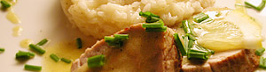

Kalbsfilet an Limettensauce
5,5 von 6filet: kräftig anbraten und bei 80 grad für ca. eine stunde nachgaren. vor dem schneiden einige
minuten ruhen lassen.
limettensauce: 1 dl weisswein und 1 dl bouillon mit einer gehacken charlotte und einem teelöfel limmetensaft auf ein paar wenige tropfen reduzieren. absieben und vom herd nehmen. 150 gramm butter protionenweise
darunter ziehen. vor dem servieren schnittlauch dazugeben.
